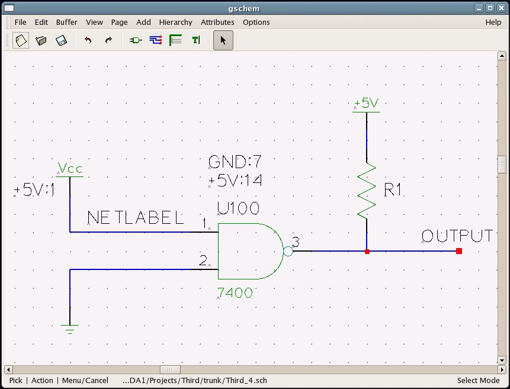

by: Ales Hvezda
This document is released under GFDL
October 2nd, 2003
The information in this document is current as of 19991011.
The net= attribute is used to specify power, ground, and/or arbitrary nets in the gEDA system.
The net= attribute is used instead some of the other systems of specifying power/ground (such as having power/ground pins on symbols or power boxes). Some devices have lots of power/ground pins and having all of these pins on the symbol would increase its size and make it unmanageable. The net= attribute is the power/ground specification of choice in the gEDA system because of its simplicity and versatility. Now having said all this, you can have power/ground pins on a symbol, but gnetlist will probably not recognize these nets connected to these pins as separate power/ground nets. Please keep this in mind as you draw symbols.
Attributes in gEDA are simple text items which are in the form name=value. All proper attributes follow this form. Attribute names are always lower case, but the value can be upper or lower case. gnetlist and friends are case sensitive. Typically net/signal names by default are upper case.
Attribute can be attached to an object or in certain cases (like the net= attribute) can be free oating (not attached to anything). The free floating attributes are also called toplevel attributes.
The net= attribute is a text item which takes on the following form:
net=signalname:pinname,pinname,pinname,...
where:
net= | The attribute name (always the same, lowercase) |
| signalname | The signal or net being defines (like +5V, GND, etc…) |
| pinname | The pin name (or number) which is assigned to this signal/net (or pin names/numbers) |
The signalname cannot contain the ":" character (since it is a delimiter). The pinname is the pin name (A1, P2, D1, etc…) or pin number (1, 2, 5, 13, etc…). The pinname cannot contain the "," character (since it is also a delimiter). pinnames are typically the same sort of numbers/names like the pin#=# attribute (if you are familiar with that attribute).
You can only have ONE signalname per net= attribute, but you can have as many pinnames/numbers as you want.
You can place the net= attribute in several places. Here’s the list so far:
net=GND:7 or net=+5V:14net= created net/signal. Suppose a symbol has a net=GND:7 inside it already; attaching this to the symbol: net=AGND:7 overrides the GND net (on pin 7) calling it AGND and connects/associates it to pin 7.net=DIGITAL_GND:1).net= attribute inside, so you must attach the net= attribute yourself (in the schematic).net= attribute in them already (can be overridden though). You can use these symbol as examples of how to use the net= attribute.
You can have as many net= attributes as you want. Just remember that net= attributes attached to the outside of a symbol override any equivalent internal (inside the symbol) net= attributes. If you run into a case where this doesn’t work, please let ahvezdaATgeda.seul.org. In fact, send any bug reports to that individual.
The net= attribute/mechanism is fairly new, so there are bound to be bugs (many bugs). Here are some of the identified issues:
net= attribute or any other power/ground specifiers. Hopefully this will be updated sometime (any volunteers?).net= attribute (in/attached to the vcc/gnd symbol). You can override this (so the reverse is true) by playing with the “net-naming-priority”. Be careful with this. There might be other “aliasing” issues which have not been identified yet.net= attribute which associates a signal name with a pin which is already visible on the symbol, is probably a bad idea. This does work, but all the ramifications have not been explored yet.net= attribute attached several times. Ales has not formalized what happens in this case. Just remember that the net= attribute on the outside of a symbol should override the internal one.
Here’s a schematic which uses standard symbols (note: the 7400 does not have the net= attribute inside yet). This schematic consists of a 7400 with the net= attributes attached for power and ground, One of the input pins grounded using a gnd symbol and the other at a logic one using the vcc symbol (with an attached net= attribute). One of the input net is named, but as you will see, the netname is replaced by the net= signal name (see above for more info on this). The output is pulled up with a pull up resistor which has power specified using the +5V symbol.
|  |
v 19991011
C 38700 58100 1 0 0 7400-1.sym
{
T 39000 59000 5 10 1 1 0
uref=U100
T 38900 59500 5 10 1 1 0
net=GND:7
T 38900 59300 5 10 1 1 0
net=+5V:14
}
N 38700 58800 37400 58800 4
{
T 37600 58900 5 10 1 1 0
netname=NETLABEL
}
N 37400 58800 37400 59200 4
N 38700 58400 37400 58400 4
N 37400 58000 37400 58400 4
C 37300 57700 1 0 0 gnd-1.sym
C 37200 59200 1 0 0 vcc-1.sym
{
T 36800 59200 5 10 1 1 0
net=+5V:1
}
N 40000 58600 41600 58600 4
{
T 41200 58700 5 10 1 1 0
netname=OUTPUT
}
C 40700 58800 1 90 0 resistor-1.sym
{
T 40800 59200 5 10 1 1 0
uref=R1
}
N 40600 58800 40600 58600 4
N 40600 59900 40600 59700 4
C 40400 59900 1 0 0 5V-plus-1.sym
gnetlist (using the geda netlist format) run using this sample schematic outputs this:
START header gEDA's netlist format Created specifically for testing of gnetlist END header START components R1 device=RESISTOR U100 device=7400 END components START renamed-nets NETLABEL -> +5V END renamed-nets START nets +5V : R1 2, U100 14, U100 1 GND : U100 7, U100 2 OUTPUT : R1 1, U100 3 END nets
Notice how NETLABEL was renamed (aliased to the +5V net).
Send all bugs to ahvezdaATgeda.seul.org or geda-devATgeda.seul.org (mailing list, please subscribe first). [I’m sure there’s more to say here]